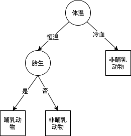

Data方法篇（一）决策树
- 对应《数据挖掘导论（完整版）》第4章、《机器学习》第4章、《统计学习方法》第5章。
1. 决策树模型
定义
- 决策树（Decision Tree）是一种基本的分类与回归方法。
- 可以认为是if-then规则的集合、定义在特征空间与类空间与类空间上的条件概率分布。
- 主要优点：模型具有可读性，分类速度快。
- 学习时，利用训练数据，根据损失函数最小化的原则建立决策树模型。
示意图

- 「元素」
- 叶结点（left node）或终结点（terminal node）：决策结果
- 内部结点（internal node）或非终止结点（non-terminal node）：属性测试条件
决策树学习
本质：是从训练数据集中归纳出一组分类规则。
决策树学习使用损失函数，通常是正则化的极大似然函数，决策树学习的策略是以损失函数为目标函数的最小化。
三个关键步骤： 特征选择（划分选择）、决策树的生成和决策树的修剪。
- 决策树的生成对应于模型的局部选择，决策树的剪枝对应于模型的全局选择。
- 特征选择是在决策树的生成过程之中使用，而修剪是可以在生成前后都可以进行的。
常用的算法：ID3、C4.5与CART
2. 特征选择
- 特征选择（划分选择）是决策树学习的关键，即如何选择最优划分属性。特征选择在于选取对训练数据具有分类能力的特征，即提高结点的纯度（purtiy）。
- 以下是用于特征选择常用的几种指标：信息增益、信息增益比、基尼指数
信息增益
- 信息熵（information entropy）：度量样本集合纯度最常用的一种指标。
- 样本集合$D$中第k类样本所占的比例为$p_k(k=1,2,..,|y|)$，则D的信息熵定义为：
- $Ent(D)=-\sum^{|y|}_{k=1}p_k\log_2p_k$
- $Ent(D)$的值越小，则$D$的纯度越高
- 样本集合$D$中第k类样本所占的比例为$p_k(k=1,2,..,|y|)$，则D的信息熵定义为：
- 信息增益（information gain）
- 属性a对样本集D进行划分所获的”信息增益“
- $Gain(D,a)=Ent(D)-\sum^V_{v=1}\frac{|D^v|}{|D|}Ent(D^v)$
- 一般而言，信息增益越大，则意味着使用属性a来进行划分所获得的“纯度提升”越大。
- 存在的问题：偏向于选择取值较多的特征的问题。
- 属性a对样本集D进行划分所获的”信息增益“
信息增益比
- 信息增益比（增益率，information gain ratio）
- $Gain_ratio(D,a)=\frac{Gain(D,a)}{IV(a)}$
- 固有值（intrinsic value）：$IV(a)=-\sum^V_{v=1}\frac{|D|^v}{|D|}\log_2(\frac{|D^v|}{|D|})$
- 缺陷：增益率准则对可取数目较少的属性有所偏好
- C4.5中使用启发式算法，先从候选划分属性中选出信息增益高于平均水平的属性，再从中选择增益率最高的最高的
基尼系数
- 基尼系数（Gini index）：被CART决策树使用
- $Gini(D)=\sum^{|y|}{k=1}\sum{k’\neq k}p_kp_{k’}=1-\sum^{|y|}_{k=1}p_k^2$
- $Gini(D)$反应了从数据集D中随机抽取两个样本，其类别标记不一致的概率。
- $Gini(D)$越小，则数据集D的纯度越高
- 属性a的基尼指数定义为：
- $Gini_index(D,a)=\sum^V_{v=1}\frac{|D^v|}{|D|}Gini(D^v)$
- 选择划分后基尼指数最小的属性作为最优划分属性，即$a_*=\arg \min_{a\in A}Gini_index(D,a)$
3. 决策树的生成
- 由于搜索空间是指数规模的，找出最佳决策树在计算上是不可行的。所以人们开发了一些有效的算法来构造次最优决策树。这些算法通常都采用贪心策略，采取一系列的局部最优策略来构造决策树。
Hunt 算法
- Hunt算法通过将训练记录相继划分成较纯的子集，以递归方式建立决策树，是许多决策树算法的基础，包括ID3、C4.5和CART。
- 算法：设$D_t$是与结点t关联的训练记录集，而$y={y_1,y_2,…,y_c}$是类标签
- 如果$D_t$中所有记录都属于同一个类$y_t$，则$t$是叶节点，用$y_t$表示
- 如果$D_t$中包含属于多个类的记录，则选择一个属性测试条件，将记录划分成较小的子集。对于测试条件的每个输出，创建一个子女结点，并根据测试结果将$D_t$中的记录分布到子女结点中。然后，对于每个子女结点，递归地调用该算法。
- 补充附加条件：处理特殊情况
- 当创建的子女结点为空，即不存在与这些结点相关联的记录时，则该结点为叶结点，类标号为父结点上训练记录的多数类。
- 当与$D_t$相关联的所有记录都具有相同的属性值，无法划分，但类又不同时，标号记为与结点相关联的训练记录中的多数类。
ID3 算法
ID3算法的核心是在决策树各个节点上应用信息增益准则选择特征，递归地构建决策树。
- 相当于用极大似然法进行概率模型的选择。
算法：
输入：训练数据集$D$，特征集$A$阈值$\epsilon $
输出：决策树$T$
若$D$中所有实例属于同一类$C_k$，则$T$为单结点树，并将类$C_k$作为该结点的类标记，返回$T$；
若$A=\phi$，则$T$为单结点树，并将$D$中实例数最大的类$C_k$作为该结点的类标记，返回$T$；
否则，计算$A$中各特征对$D$的信息增益，选择信息增益最大的特征$A_g$
$Gain(D,a)=Ent(D)-\sum^V_{v=1}\frac{|D^v|}{|D|}Ent(D^v)$；
如果$A_g$的信息增益小于阈值$\epsilon$，则置$T$为单结点树，并将$D$中实例数最大的类$C_k$作为该结点的类标记，返回$T$；
否则，对$A_g$的每一可能值$a_i$，依$A_g=a_i$将$D$分割为若干非空子集$D_i$，将$D_i$中实例数最大的类作为标记，构建子结点，由结点及其子结点构成树$T$，返回$T$；
对第$i$个结点，以$D_i$作为训练集，以$A-{A_g}$为特征集，递归地调用1~5步，得到子树$T_i$，返回$T_i$。
C4.5 算法
- C4.5 算法在生成过程中用信息增益比来选择特征，其它步骤相同。
- 信息增益比：$Gain_ratio(D,a)=\frac{Gain(D,a)}{IV(a)}$
- 固有值（intrinsic value）：$IV(a)=-\sum^V_{v=1}\frac{|D|^v}{|D|}\log_2(\frac{|D^v|}{|D|})$
CART 算法
- 分类与回归树（classification and regression tree, CART）模型，是广泛的决策树学习方法。同样由特征选择、树的生成和剪枝组成，既可以用于分类也可以用于回归。
- 组成：
- 生成：基于训练数据集生成决策树，生成的决策树要尽量大；
- 剪枝：用验证数据集对已生成的树进行剪枝并选择最优子树，用损失函数最小作为剪枝的标准。
- 生成
- 回归树：平方误差最小化准则
- 平方误差：$\sum_{x_i\in R_{m}}(y_i-f(x_i))^2$
- 寻找最优切分变量（splitting variable）、切分点（splitting point），即求解：
- $\min_{j,s}[\min_{c_1}\sum_{x_i\in R_1(j,s)}(y_i-c_1)^2+\min_{c_2}\sum_{x_i\in R_2(j,s)}(y_i-c_2)^2]$
- $R_1(j,s)={x|x^{(j)}\le s}$；$R_2(j,s)={x|x^{(j)}> s}$
- 分类树：基尼指数最小化准则
- 基尼指数最小化
- $Gini_index(D,a)=\sum^V_{v=1}\frac{|D^v|}{|D|}Gini(D^v)$
- 基尼指数最小化
- 回归树：平方误差最小化准则
- 剪枝
- 两步
- 剪枝，形成一个子树序列（关于损失函数参照下一节剪枝内容，来便于理解）
- 计算损失函数：$C_\alpha(T)=C(T)+\alpha |T|$
- 将$\alpha$从小增大，形成一系列的区间$[\alpha_i,\alpha_{i+1})$，得到对应区间的最优子树$T_i$
- 对$T_0$的任意内部结点$t$
- 以$t$为单结点树的损失函数：$C_\alpha(t)=C(t)+\alpha$
- 以$t$为根结点的子树$T_t$的损失函数：$C_\alpha(T_t)=C(T_t)+\alpha|T_t|$
- $\alpha=\frac{C(t)-C(T_t)}{|T_t|-1}$，即$C_\alpha(T_t)=C_\alpha(t)$时，$T_t$与$t$具有相同的损失函数，而$t$的结点少，因此$t$比$T_t$更可取，对$T_t$进行剪枝
- 因此，
- $g(t)=\frac{C(t)-C(T_t)}{|T_t|-1}$，表示剪枝后整体损失函数减少的程度
- 将$\alpha_k=\alpha,T_k=T$，不断剪枝下去，直到根结点。
- 在得到的子树序列$T_0,T_1,…,T_n$中通过交叉验证选取最优子树
- 利用独立的验证数据集，测试子树序列中各棵子树的平方误差或基尼指数，最小的被认为是最优的决策树。
- 剪枝，形成一个子树序列（关于损失函数参照下一节剪枝内容，来便于理解）
- 步骤
- 设$k=0,T=T_0$。
- 设$\alpha=+\infty$。
- 自下而上地对各内部结点$t$计算$C(T_t)$，$|T_t|$以及$g(t)$和$\alpha$
- $T_t$为以$t$为根结点的子树，$C(T_t)$为对训练数据的预测误差，$|T_t|$是$T_t$的叶结点个数
- $g(t)=\frac{C(t)-C(T_t)}{|T_t|-1}$，$\alpha=\min(\alpha,g(t))$
- 对$g(t)=\alpha$的内部结点$t$进行剪枝，并对叶结点$t$以多数表决法决定其类，得到树$T$。
- 设$k=k+1,\alpha_k=\alpha,T_k=T$
- 如果$T_k$不是由根结点及两个叶结点构成的树，则回到步骤（2）；否则令$T_k=T_n$
- 采用交叉验证法在子树序列$T_0,T_1,…,T_n$中选取最优子树$T_\alpha$
- 两步
4. 剪枝处理
- 在上一节的CART算法中已经提及了它的剪枝处理，在本节将对剪枝处理本身进行一些描述。这里主要做一些描述性的介绍，不再进行具体细化的描述，不清楚可以自行寻找一些例子。
- 剪枝（pruning）是决策树学习算法应对过拟合的主要手段，可以通过主动去掉一些分支来降低过拟合的风险，基本策略有“预剪枝“（prepruning）和“后剪枝“（postpruning）两种。
- 预剪枝是指在决策树生成过程中，对每个结点在划分前先进行估计，若当前结点的划分不能带来决策树泛化性能的提升则停止划分，并将当前结点标记为叶结点；后剪枝则是先从训练集生成一棵完整的决策树，然后自底向上地对非叶结点进行考察，若将该结点对应的子树替换为叶结点能带来决策树泛化性能的提升，则将该子树替换为叶结点。
- 剪枝方法：极小化决策树整体的损失函数（loss function）或代价函数（cost function）来实现。
- 损失函数：$C_\alpha(T)=C(T)+\alpha |T|$
- $C(T)$：对训练数据的预测误差，即模型与训练数据的拟合程度（如基尼指数）
- $|T|$：子树的叶结点个数，即模型复杂度
- $\alpha\ge0$：参数，参数$\alpha$权衡训练数据的拟合程度与模型的复杂程度
- 较大：较简单的模型；较小：较复杂的模型
- $\alpha=0$：只考虑模型与训练数据的拟合程度，不考虑模型的复杂程度
- 剪枝，就是当$\alpha$确定时，选择损失函数最小的模型，即损失函数最小的子树。
- 损失函数：$C_\alpha(T)=C(T)+\alpha |T|$
- 决策树生成学习局部的模型，而决策树剪枝学习整体的模型。
5. 其它相关内容
- 还有一些内容与决策树相关，但对决策树的基础而言不显得十分重要，所以不再介绍，只是提及词汇，有兴趣可以参考三本书中的内容。包括，连续值与缺失值的处理（《机器学习》4.4、《数据挖掘（导论）完整版》）、多变量决策树（《机器学习》4.5、《数据挖掘（导论））。